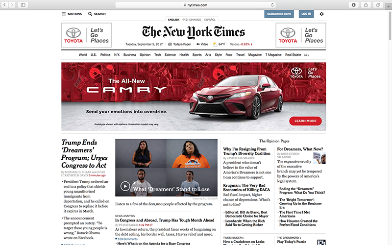
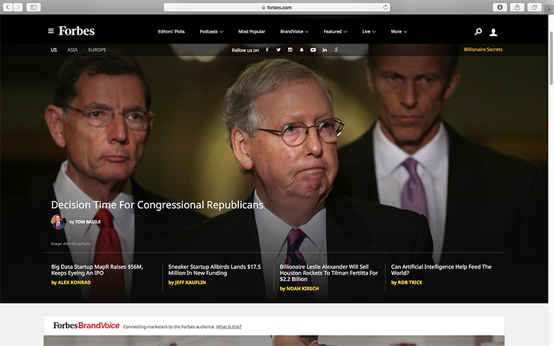

Website Comparison
A Successful Website: The New York Times
The New York Times website, nytimes.com , presents easy navigation whether you are familiarized with it or not. The hierarchy makes it easy to understand the overall structure of the information, and even though there are a lot of elements at the same time (text, pictures, ads), the use of white space and light gray rules is successful in diminishing visual weight and making it clear where to click for what. Also in terms of navigation, the website is efficient in terms of few clicks being necessary to get to the information you are interested in, and after an article a section of “Related coverage” facilitates looking deeper into a particular subject. On the downside, however, big banners of advertisments impact user satisfaction.
A Less Successful Website: Forbes
Although at first glance the overall layout of forbes.com makes it seem structured and clear, once you start to navigate it the organization of the information is awkward and inefficient. On one hand, although there is a clear menu at the top, two other menus (a pull-down on the top left and another menu at the very bottom of the homepage) -that differ from both this main one and from each other- make it unclear which one to use to find what unless the uswer goes through all of them. This characteristic implies that unless the uswer is very familiarized with the website it is difficult to remember where to find previously-seen content. Also in the homepage, once you start to scroll down the information is rather disorganized (there seems to be no logic as to why something is where it is) and user satisfaction is affected by blocks of either ads or podcasts that trump readability. On the other hand, once you click on a subject in either menu there is a lot of information the user has to skim through to find what she is interested in, and on occasion the website uses intersitials which also negatively impact user experience.
